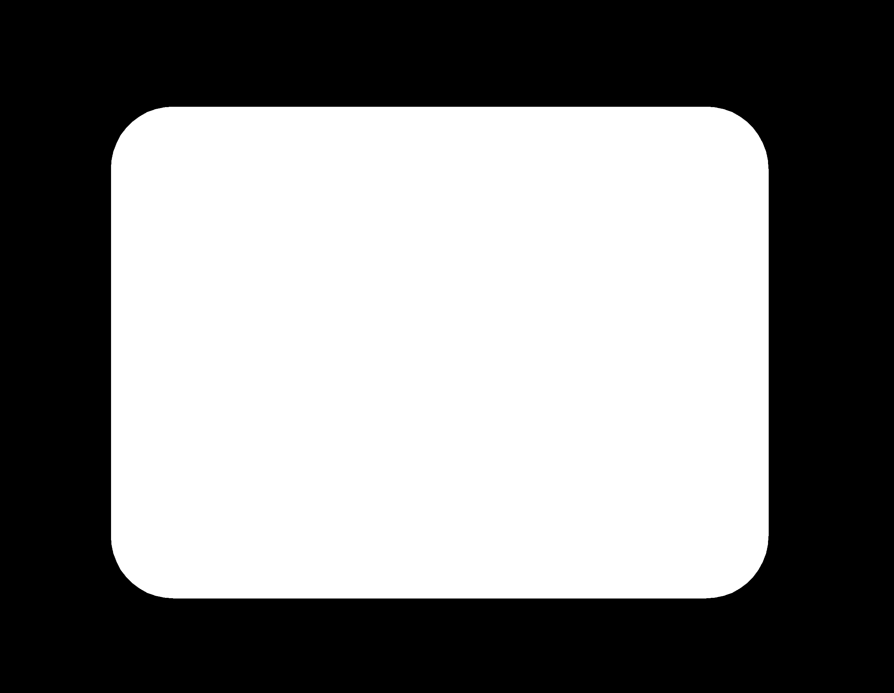

Topics Covered
- Introduction
- Ideation
- Bill of Materials
- PCB Fabrication
- Wiring
- CNC Machining
- Resin Pouring
- Programming
- Assembly
- Finished Project
- Review
- Showcase
Lazy Waterer
For my Final project for this module, I decided to make an EZ plant watering system. I decided on making my EP1000 simpler and more efficient to use, I removed unnecessary components. I decided on a modular system where everything is portable and easy to switch around.
Ideation
With this initial idea, I wanted to use a wifi board ESP8622. Where the watering system can be controlled through a phone app/web remotely.
However, due to my inexperience with using a wifi module, my teacher Mr Chew suggested that I simplify my project. As such, I decided to use ATtiny1614 instead with the following setup. The shelf was also not such a great idea and I decided a pot stand would be much better.

Soil Moisture Sensor
As it was my first time using this particular moisture sensor, I followed this
website's information as well as this youtube video by Brandon Jacobson.
| Material used | Estimated price |
|---|---|
| Copper PCB Board | $- |
| ATtiny1614 | $1.50 |
| A03400 (n-channel MOSFFET) | $- |
| 1N4001 (diode) | $- |
| AMS1117 - 5V | $- |
| Resistors 1K & 1M | $- |
| Capacitors 10uF & 1uF | $- |
| 4xAA Battery Case (6V) | $1.00 |
| AA Batteries x4 | $2.00 |
| NeoPixel x 10 LEDs | $- |
| Submersible Water Pump | $3.50 |
| Mechanical Keyboard Switch | $0.60 |
| Slide switch | $0.80 |
| Resistive Soil Moisture Sensor | $3.96 |
| 6mm*8mm White Silicon Tube | $2.04 |
| Resin | $- |
| 18mm Plywood | $- |
| Water Container | FREE |
PCB Fabrication
Before I can begin designing the layout of my PCB, I sketched out what components and modules I would like to place on my PCB.

I followed the steps as stated in my Electronics Design Documentation. I created my PCB schematic and board layout as shown.
I then obtained my trace and outline PNG files shown.
Then I generated the g-codes trace.nc & outline.nc files.
Once that was done, I used the stepcraft to start milling my PCB. I decided to use a 20°x 0.1 mill bit this time round, since it was new, my traces were without any burrs.
I soldered my PCB components onto the PCB board itself.

However, as from the picture above you can tell that I forgot to solder on 2 pinheads. I did not notice this till later on, and when i did solder the pins on, I accidentally ripped off the padding. I then just decided to solder the jumper wires directly onto the diode.

When programming my pcb, I also realised I didnt pull out the UPDI pin, thus I soldered on a jumper wire directly. After this was done, this is how my final pcb board looked like.


Wiring
As I have decided to use a modular design, I wanted all my components to be easily removable and replaced with something else.
I made use of jumper wires to connect most if not all my components to my PCB board.
To make my connections via jumper wires, I stripped one end of the wires.
I then attached jumper wires to all my pcb connections. Some examples are shown below.
For my NeoPixels, I wanted them to be in a ring shape thus I cut up the strip of LEDs into 5 seperate strips of 2 LEDs. After looking at this website on how to operate NeoPixels, I learnt that a resistor is adviced to be in connection to D-in pin. Thus, I connected a 470 ohm resistor to my D-in pin wire.
These are the loose components that are attached via jumper wires.
CNC Machining
I made use of Fusion 360 to create my model of the pot stand. My model is shown below

Using Versatil 2500, by EAS, I machined out my model. More information on how to do 2D CNC can be found here. I added in dog n bone features as I had connecting joints. I used a 3mm mill bit.
When the milling was done, I was left with pieces that had many burrs. I used a sander to sand down the flat and larger parts, a picture of me sanding is shown. As for the smaller parts I used sandpaper.
Resin Pouring
To prepare for my resin pour, I needed to secure my neopixels to the plywood so it would not float up. I did so with hot glue.
For my pour, I estimated that I would need about 200g of resin in total. The resin I used was 3:1 (hardener). After mixing the resin, I put the mixed resin into a vacuum chamber where the bubbles were brought to the surface. After letting the bubbles set, I poured the resin into the cutout on the plywood.

Despite using the vacuum chamber, the surface of the pour was still filled with tiny air bubbles that are not easy to get rid of. When the resin was fully cured, I used some sandpaper to try and even out the surface. Eventhough it does not look very pleasing, it is smooth to the touch.
Programming
I used a FTDI-UPDI programmer made previously to program my board.
NeoPixel Tests
To test that the neopixels are working, I used the following code. I adapted it a few times to make sure what I wanted would work.
Soil Moisture Sensor Tests
To test what the values or the soil moisture sensors are, I used the following code. I placed the sensor in some dry soil and took that value. This would be the limit.
Button Tests
To make sure my button gives the correct output I want, I made use of my board's RX & TX pins such that the serial monitor would display the values.
Final Code
Now that everything is working, I start to assemble my code. The final code is as follows. After the code is done, I had to make sure that things are working according to plan.
Button Activating Pump Test.
NeoPixel Colour Test.
Assembly

The final wiring would look something like this. I attached everything to the plywood using hot glue.
Finished Project
Here are some images of my finished product.

How does it work?
Powering on:
There is a slide switch on the front of the pot stand. This turns on the system.
Soil Moisture Sensor:
The soil moisture sensor measures the level of moisture in the soil by using resistance.
Watering:
Pushing & holding the button on the front of the pot stand would start watering the plant.
Lighting:
BLUE-soil moisture level is ok!
ORANGE-soil mositure level is low and requires watering.
GREEN-Soil is currently being watered.
Review
What was successful?
I managed to get the design I wanted and the different fabricated parts fit together perfectly. The coding for this project was done very smoothly.
What needs more work?
My PCB creation can be smoother where everything is thoroughly checked through before milling. Feedback Was given that as this is to be switched on 24/7, it would be better that the power source was from a wall outlet rather than a battery pack.
Showcase
Here is a video of my final project fabrication process as well as how it works.
Here is my project presentation slide.

The biggest THANK YOU! to Mr Chew, Mr Yeo and the other FabLab staffs :)
This would not have been possible without you.